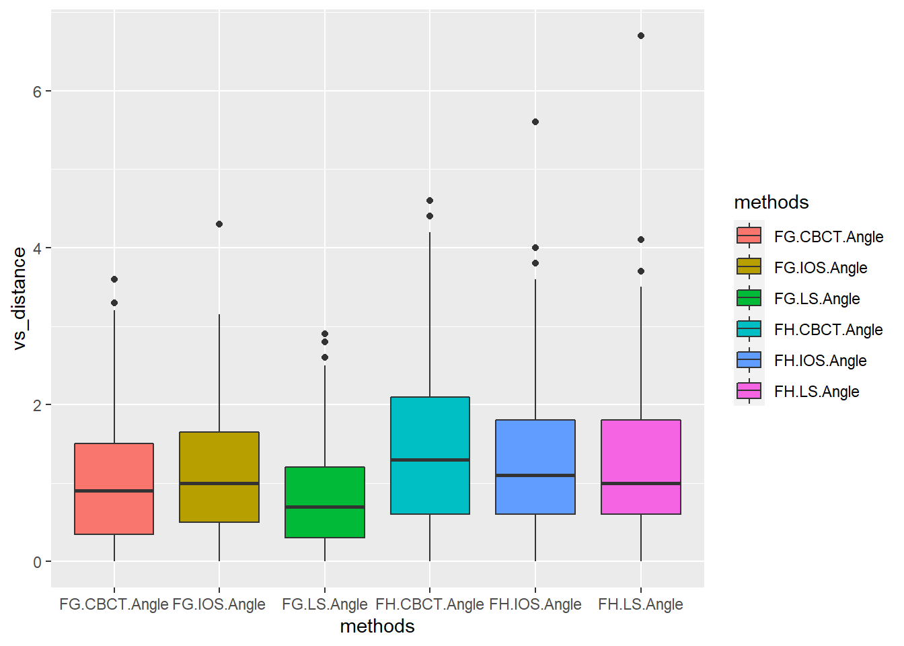

10/17/2022
2022-10-17
Last updated: 2022-10-19
Checks: 6 1
Knit directory: Collaborations/
This reproducible R Markdown analysis was created with workflowr (version 1.7.0). The Checks tab describes the reproducibility checks that were applied when the results were created. The Past versions tab lists the development history.
The R Markdown file has unstaged changes. To know which version of
the R Markdown file created these results, you’ll want to first commit
it to the Git repo. If you’re still working on the analysis, you can
ignore this warning. When you’re finished, you can run
wflow_publish to commit the R Markdown file and build the
HTML.
Great job! The global environment was empty. Objects defined in the global environment can affect the analysis in your R Markdown file in unknown ways. For reproduciblity it’s best to always run the code in an empty environment.
The command set.seed(20210523) was run prior to running
the code in the R Markdown file. Setting a seed ensures that any results
that rely on randomness, e.g. subsampling or permutations, are
reproducible.
Great job! Recording the operating system, R version, and package versions is critical for reproducibility.
Nice! There were no cached chunks for this analysis, so you can be confident that you successfully produced the results during this run.
Great job! Using relative paths to the files within your workflowr project makes it easier to run your code on other machines.
Great! You are using Git for version control. Tracking code development and connecting the code version to the results is critical for reproducibility.
The results in this page were generated with repository version fe99b65. See the Past versions tab to see a history of the changes made to the R Markdown and HTML files.
Note that you need to be careful to ensure that all relevant files for
the analysis have been committed to Git prior to generating the results
(you can use wflow_publish or
wflow_git_commit). workflowr only checks the R Markdown
file, but you know if there are other scripts or data files that it
depends on. Below is the status of the Git repository when the results
were generated:
Ignored files:
Ignored: analysis/.Rhistory
Unstaged changes:
Modified: analysis/2022_Oct1_Ajitesh.Rmd
Note that any generated files, e.g. HTML, png, CSS, etc., are not included in this status report because it is ok for generated content to have uncommitted changes.
These are the previous versions of the repository in which changes were
made to the R Markdown (analysis/2022_Oct1_Ajitesh.Rmd) and
HTML (docs/2022_Oct1_Ajitesh.html) files. If you’ve
configured a remote Git repository (see ?wflow_git_remote),
click on the hyperlinks in the table below to view the files as they
were in that past version.
| File | Version | Author | Date | Message |
|---|---|---|---|---|
| Rmd | fe99b65 | Han | 2022-10-19 | 10/19/2022 |
| html | fe99b65 | Han | 2022-10-19 | 10/19/2022 |
trueness
anova test

Analysis of Variance Table
Response: Angle
Df Sum Sq Mean Sq F value Pr(>F)
methods 5 60.151 12.0301 12.092 2.097e-09 ***
Residuals 114 113.413 0.9949
---
Signif. codes: 0 '***' 0.001 '**' 0.01 '*' 0.05 '.' 0.1 ' ' 1- small p value,
2.097e-09suggestsAngleare not ALL equal across 6 methods
pairwise comparisons
- non paired two sample t test is used
precision
anova test

Analysis of Variance Table
Response: vs_distance
Df Sum Sq Mean Sq F value Pr(>F)
methods 5 45.74 9.1488 12.522 7.445e-12 ***
Residuals 1140 832.92 0.7306
---
Signif. codes: 0 '***' 0.001 '**' 0.01 '*' 0.05 '.' 0.1 ' ' 1pairwise comparisons
sessionInfo()R version 4.1.2 (2021-11-01)
Platform: x86_64-w64-mingw32/x64 (64-bit)
Running under: Windows 10 x64 (build 19044)
Matrix products: default
locale:
[1] LC_COLLATE=English_United States.1252
[2] LC_CTYPE=English_United States.1252
[3] LC_MONETARY=English_United States.1252
[4] LC_NUMERIC=C
[5] LC_TIME=English_United States.1252
attached base packages:
[1] stats graphics grDevices utils datasets methods base
other attached packages:
[1] DT_0.25 rstatix_0.7.0 ggpubr_0.4.0 kableExtra_1.3.4
[5] forcats_0.5.1 stringr_1.4.0 dplyr_1.0.7 purrr_0.3.4
[9] readr_2.1.1 tidyr_1.1.4 tibble_3.1.6 ggplot2_3.3.5
[13] tidyverse_1.3.1
loaded via a namespace (and not attached):
[1] httr_1.4.2 sass_0.4.1 jsonlite_1.7.3 viridisLite_0.4.0
[5] carData_3.0-5 modelr_0.1.8 bslib_0.3.1 assertthat_0.2.1
[9] highr_0.9 cellranger_1.1.0 yaml_2.2.2 pillar_1.6.5
[13] backports_1.4.1 glue_1.6.0 digest_0.6.29 promises_1.2.0.1
[17] ggsignif_0.6.3 rvest_1.0.2 colorspace_2.0-2 htmltools_0.5.2
[21] httpuv_1.6.5 pkgconfig_2.0.3 broom_0.7.11 haven_2.4.3
[25] scales_1.1.1 webshot_0.5.2 svglite_2.0.0 whisker_0.4
[29] later_1.3.0 tzdb_0.2.0 git2r_0.29.0 farver_2.1.0
[33] generics_0.1.1 car_3.0-12 ellipsis_0.3.2 withr_2.4.3
[37] cli_3.1.1 magrittr_2.0.1 crayon_1.4.2 readxl_1.3.1
[41] evaluate_0.14 fs_1.5.2 fansi_1.0.2 xml2_1.3.3
[45] tools_4.1.2 hms_1.1.1 lifecycle_1.0.1 munsell_0.5.0
[49] reprex_2.0.1 compiler_4.1.2 jquerylib_0.1.4 systemfonts_1.0.3
[53] rlang_0.4.12 grid_4.1.2 rstudioapi_0.13 htmlwidgets_1.5.4
[57] crosstalk_1.2.0 labeling_0.4.2 rmarkdown_2.11 gtable_0.3.0
[61] abind_1.4-5 DBI_1.1.2 R6_2.5.1 lubridate_1.8.0
[65] knitr_1.37 fastmap_1.1.0 utf8_1.2.2 workflowr_1.7.0
[69] rprojroot_2.0.2 stringi_1.7.6 Rcpp_1.0.8 vctrs_0.3.8
[73] dbplyr_2.1.1 tidyselect_1.1.1 xfun_0.29